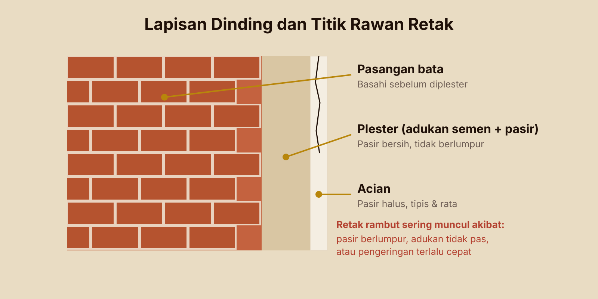
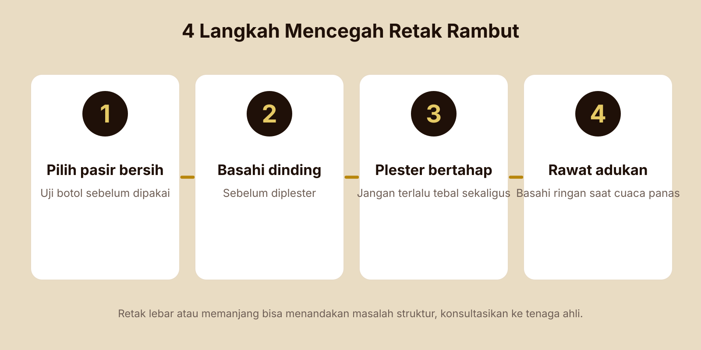

Retak rambut sering muncul beberapa minggu setelah finishing. Pahami penyebab umumnya, mulai dari pasir hingga cara perawatan adukan.
Retak rambut adalah retakan halus pada permukaan plester atau acian. Biasanya tidak langsung membahayakan struktur, tetapi mengganggu tampilan dan bisa menjadi jalan masuk air.
Penyebab yang paling umum
- Pasir berlumpur. Lumpur menghalangi daya rekat semen sehingga adukan mudah retak saat mengering.
- Campuran tidak pas. Terlalu banyak semen atau terlalu encer membuat penyusutan lebih besar.
- Plester terlalu tebal dalam sekali kerja.
- Dinding terlalu kering sehingga menyerap air adukan dengan cepat.
- Pengeringan terlalu cepat karena panas atau angin tanpa perawatan.
- Pergerakan struktur di sambungan bata dengan kolom atau balok.
Pencegahan dari sisi material
Pilih pasir bersih dengan kadar lumpur rendah dan butiran sesuai peruntukan, misalnya pasir halus untuk plester dan acian. Cek menggunakan uji botol sebelum dipakai. Pasir berlumpur yang terlanjur datang sebaiknya tidak dipakai untuk finishing.

Pencegahan dari sisi pengerjaan
- Basahi permukaan dinding sebelum diplester.
- Plester bertahap bila perlu tebal.
- Jaga adukan sesuai takaran, jangan menambah air berlebihan.
- Lakukan perawatan dengan membasahi permukaan secara ringan setelah plester mulai mengeras, terutama saat cuaca panas.
- Beri perkuatan seperti kawat ayam di sambungan material berbeda bila diperlukan.
Perlu diingat: retak yang lebar, memanjang, atau bergerak bisa menandakan masalah struktural. Dalam kasus itu konsultasikan ke tenaga ahli, bukan hanya diplester ulang.
Butuh material untuk proyek Anda?
Tanyakan harga dan ketersediaan, atau minta bantuan memilih jenis yang tepat.
Konsultasi via WhatsApp